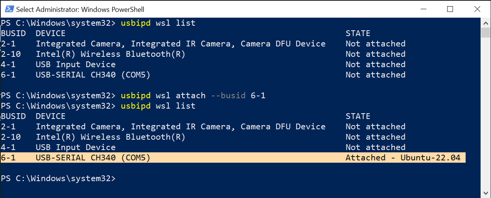
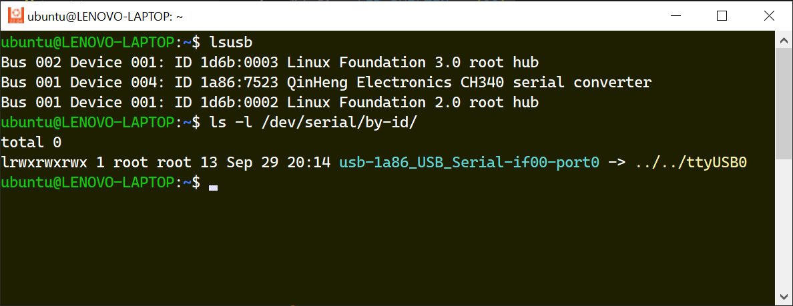
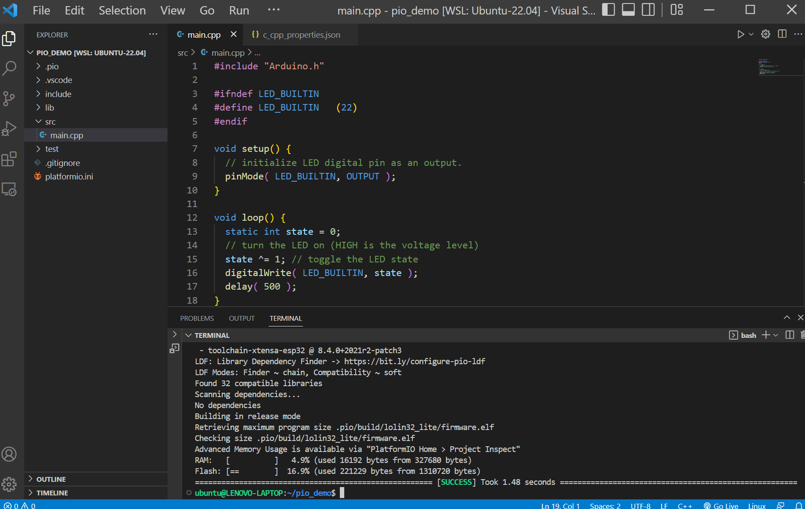
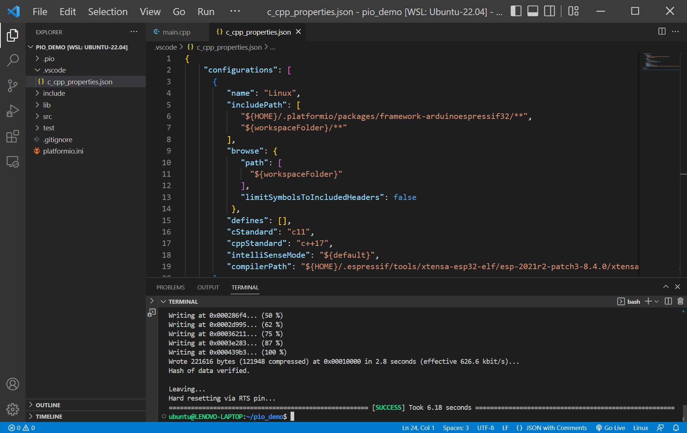

การใช้งาน PlatformIO (PIO) Core สำหรับ WSL2 Ubuntu ในเบื้องต้น#
▷ PIO Core และการทำคำสั่งแบบ Command Line#
PlatformIO IDE เป็นแอปพลิเคชันแบบ GUI และเป็น Open Source สำหรับการเขียนโค้ด C/C++ เพื่อนำไปใช้กับบอร์ดไมโครคอนโทรลเลอร์ได้หลายตระกูลหลายรุ่น การทำงานของโปรแกรมนี้อาศัยโปรแกรมอีกตัวหนึ่งเป็นพื้นฐานในการทำงาน คือ PlatformIO (PIO) Core ซึ่งใช้ภาษา Python และมีการใช้งานเป็นแบบ Command Line Interface (CLI) (เหมาะสำหรับการเขียนสคริปต์คำสั่งและการคอมไพล์โค้ดแบบ Automated Build Process) ดังนั้นจึงทำงานได้แบบ Cross-platform ใช้ได้กับระบบปฏิบัติการต่าง ๆ ที่รองรับการใช้งาน Python 3
บทความนี้กล่าวถึง การติดตั้งและใช้งาน PIO Core ในเบื้องต้น และลองเขียนโค้ด Arduino Sketch สำหรับบอร์ด ESP32 (WeMos Lolin32 Lite) แต่ถ้าได้ติดตั้งซอฟต์แวร์ PlatformIO IDE เป็น Extension สำหรับ VS Code ไว้แล้ว ก็สามารถใช้คำสั่งต่าง ๆ ของ PIO Core ได้โดยไม่ต้องติดตั้งเพิ่ม
▷ ขั้นตอนการติดตั้ง PIO Core#
ทำคำสั่งเพื่อติดตั้ง PIO Core ดังนี้
# Set the URL of the Python installation script.
$ URL=https://raw.githubusercontent.com/
# Set the remote path to the script.
$ SCRIPT=platformio/platformio-core-installer/master/get-platformio.py
# Get the installation script file using wget.
$ wget ${URL}${SCRIPT} -O ./get-platformio.py
# Run the script to install PIO Core.
$ python3 ./get-platformio.py
เมื่อทำคำสั่งแล้ว จะมีการติดตั้งแพ็กเกจต่าง ๆ ที่จำเป็นสำหรับ PIO Core ไว้ใน
$USER/.platformio/penv (ใช้งานแบบ Python Virtual Environment)
เพิ่มโค้ด Bash Script ตามตัวอย่างต่อไปนี้ ไว้ในไฟล์ $HOME/.profile
(ใช้คำสั่ง nano เพื่อแก้ไขไฟล์ตามตัวอย่าง) เพื่อทำให้ระบบสามารถค้นหาและเรียกใช้คำสั่ง pio ได้
$ nano $HOME/.profile
# set PATH so it includes user's private bin if it exists
if [ -d "$HOME/.local/bin" ] ; then
PATH="$PATH:$HOME/.local/bin"
fi
if [ -d "$HOME/.platformio/penv/bin" ] ; then
PATH="$PATH:$HOME/.platformio/penv/bin"
fi
และทำคำสั่ง
# Update the PATH environment variable
export PATH=$PATH:$HOME/.platformio/penv/bin:$HOME/.local/bin
หลังจากนั้นจึงสามารถเรียกใช้คำสั่ง platformio หรือ pio ได้
▷ การทำให้ WSL2-Linux / Ubuntu มองเห็นและใช้งานอุปกรณ์ USB ได้#
สำหรับผู้ใช้ WSL2 ร่วมกับ Ubuntu ถ้าใช้ WSL Kernel
ตั้งแต่เวอร์ชัน 5.10.60.1 เป็นต้นไป
ก็สามารถใช้โปรแกรม usbipd
(USB-over-IP server daemon) เพื่อทำให้มองเห็นอุปกรณ์ USB ได้ใน WSL2
แต่มีขั้นตอนที่จะต้องดำเนินการก่อนใช้งาน
ทำคำสั่งต่อไปนี้ใน WSL2 - Ubuntu Terminal เพื่อติดตั้งแพ็กเกจสำหรับ Ubuntu
$ sudo apt install linux-tools-virtual hwdata -y
$ sudo update-alternatives --install /usr/local/bin/usbip usbip \
`ls /usr/lib/linux-tools/*/usbip | tail -n1` 20
ลองทำคำสั่งต่อไปนี้ เพื่อตรวจสอบดูว่า สามารถเรียกใช้คำสั่ง usbpip ได้หรือไม่
$ which usbip
/usr/local/bin/usbip
ถัดไปให้เปิดใช้งาน Windows PowerShell (Adminstrator) แล้วทำคำสั่งต่อไปนี้ เพื่อแสดงรายการอุปกรณ์ USB ที่มองเห็นได้ใน Windows
# Show version.
> usbipd --version
# List USB devices.
> usbipd wsl list
เชื่อมต่อบอร์ด ESP32 กับพอร์ต USB ของคอมพิวเตอร์ผู้ใช้
แล้วทำคำสั่งเพื่อเลือกใช้อุปกรณ์ USB ตาม Bus ID ที่ต้องการใช้งานกับ
WSL2 - Ubuntu เช่น 6-1 ซึ่งตรงกับชิป USB-SERIAL CH340 ของบอร์ดไมโครคอนโทรลเลอร์ ESP32
> usbipd wsl attach --busid 6-1

รูป: ตัวอย่างการทำคำสั่ง usbpid เพื่อเลือกใช้อุปกรณ์ USB กับ WSL2
ถัดไปให้ทำคำสั่งใน Bash Shell ของ WSL2 - Ubuntu เพื่อดูว่า มองเห็นอุปกรณ์ เช่น USB-to-Serial CH340 ตามตัวอย่าง
$ lsusb | grep CH340
Bus 001 Device 002: ID 1a86:7523 QinHeng Electronics CH340 serial converter
สำหรับผู้ใช้ Linux โดยทั่วไป หากจะใช้โปรแกรมคำสั่งต่าง ๆ เข้าถึงอุปกรณ์ USB
ในระบบได้โดยไม่ต้องใช้สิทธิ์ root ก็แนะนำให้เพิ่มไฟล์ .rules สำหรับโปรแกรม udev
เพื่ออนุญาตให้ผู้ใช้ทั่วไปเข้าถึงอุปกรณ์เหล่านั้นได้
ผู้พัฒนา PIO ได้จัดทำไฟล์
99-platformio-udev.rules
ให้ผู้ใช้ดาวน์โหลดไปใช้งาน โดยนำไปใส่ไว้ในไดเรกทอรี /etc/udev/rules.d/
แล้วอัปเดทการทำงานของ udev
$ sudo mv 99-platformio-udev.rules /etc/udev/rules.d/
# update the udev rules
$ sudo service udev restart
# or
$ sudo udevadm control --reload-rules
$ sudo udevadm trigger
สำหรับผู้ใช้ Ubuntu / Debian / Raspberry Pi OS
ให้เพิ่มชื่อผู้ใช้ $USER ให้เป็นส่วนหนึ่งของกลุ่ม dialout และ plugin
$ sudo usermod -a -G dialout $USER
$ sudo usermod -a -G plugdev $USER
ทำคำสั่งเพื่อตรวจสอบดูว่า สามารถมองเห็นอุปกรณ์ USB ได้หรือไม่ เช่น พอร์ต /dev/ttyUSB0
สำหรับบอร์ด ESP32

รูป: การทำคำสั่งเพื่อตรวจสอบดูรายการอุปกรณ์ USB
▷ การเริ่มต้นสร้างโปรเจกต์สำหรับ Arduino-ESP32#
เริ่มต้นด้วยการทำคำสั่งเพื่อลองดูว่า มีรายการบอร์ดไมโครคอนโทรลเลอร์ใดบ้างให้เลือกใช้ได้ เช่น
ค้นหาตามชื่อของบอร์ดไมโครคอนโทรลเลอร์ที่ขึ้นต้นด้วย esp32dev หรือ lolin
$ pio boards esp32 | grep -E "^(esp32dev|lolin)"
esp32dev ESP32 240MHz 4MB 320KB Espressif ESP32 Dev Module
lolin_c3_mini ESP32C3 160MHz 4MB 320KB WEMOS LOLIN C3 Mini
lolin_d32 ESP32 240MHz 4MB 320KB WEMOS LOLIN D32
lolin_d32_pro ESP32 240MHz 4MB 320KB WEMOS LOLIN D32 PRO
lolin_s2_mini ESP32S2 240MHz 4MB 320KB WEMOS LOLIN S2 Mini
lolin_s2_pico ESP32S2 240MHz 4MB 320KB WEMOS LOLIN S2 PICO
lolin32 ESP32 240MHz 4MB 320KB WEMOS LOLIN32
lolin32_lite ESP32 240MHz 4MB 320KB WEMOS LOLIN32 Lite
เริ่มต้นสร้างโปรเจกต์ใหม่ เช่น ใช้ชื่อว่า pio_demo ในไดเรกทอรี $HOME ของผู้ใช้
# Create a new project under a new directory.
$ mkdir -p $HOME/pio_demo && cd $HOME/pio_demo
$ pio project init --board lolin32_lite
แต่ถ้าจะสร้างโปรเจกต์และเปิดใช้งานกับ VS Code IDE ให้ทำคำสั่งโดยเพิ่ม
--ide vscode และจะมีการติดตั้ง PlatformIO Extension
ให้กับ VS Code IDE
$ pio project init --board lolin32_lite --ide vscode
โครงสร้างภายในไดเรกทอรีสำหรับโปรเจกต์ มีลักษณะดังนี้
$ tree -L 1
.
├── include
├── lib
├── platformio.ini
├── src
└── test
ไฟล์ platformio.ini ถูกสร้างขึ้นและมีการตั้งค่าใช้งานในเบื้องต้นสำหรับ PIO ดังนี้
[env:lolin32_lite]
platform = espressif32
board = lolin32_lite
framework = arduino
ลองเขียนโค้ดในไฟล์ src/main.cpp (LED Blink) ตามตัวอย่างดังนี้
$ nano src/main.cpp
#include "Arduino.h"
#ifndef LED_BUILTIN
#define LED_BUILTIN (22) // WeMos Lolin32 Lite
#endif
void setup() {
// initialize LED digital pin as an output.
pinMode( LED_BUILTIN, OUTPUT );
}
void loop() {
static int state = 0;
// turn the LED on (HIGH is the voltage level)
state ^= 1; // toggle the LED state
digitalWrite( LED_BUILTIN, state );
delay( 500 );
}
ทำคำสั่งคอมไพล์โค้ดและไฟล์ต่าง ๆ ในโปรเจกต์
# Build project from the current directory.
$ pio run
เมื่อคอมไพล์โค้ดได้สำเร็จ ทำคำสั่งเพื่ออัปโหลดไฟล์เฟิร์มแวร์ที่ได้ ไปยังบอร์ด ESP32
# List attached target boards.
$ pio device list
/dev/ttyUSB0
------------
Hardware ID: USB VID:PID=1A86:7523 LOCATION=1-1
Description: USB Serial
# Upload firmware to the target board.
$ pio run -t upload --upload-port /dev/ttyUSB0
หากจะลองเปิดไฟล์ของโปรเจกต์ใน VS Code IDE (ถ้าได้มีการติดตั้งซอฟต์แวร์นี้ไว้ใน Windows ของผู้ใช้แล้ว) ก็ให้ทำคำสั่งดังนี้
$ code .
ผู้ใช้สามารถเปิดไฟล์ src/main.cpp แก้ไขโค้ด และทำคำสั่ง pio ใน
Terminal เพื่อคอมไพล์โค้ดได้เช่นกัน

รูป: การใช้งานโปรแกรม VS Code

รูป: การใช้งานโปรแกรม VS Code — ทำคำสั่ง pio เพื่ออัปโหลดไฟล์เฟิร์มแวร์ไปยังบอร์ด
ในกรณีที่ไม่ได้สร้างโปรเจกต์สำหรับ VS Code IDE ตั้งแต่เริ่มต้น
และต้องการให้ C/C++ Extension - Indexer & IntelliSense ใน VS Code
ทำงานได้อย่างถูกต้อง จะต้องมีการแก้ไขการตั้งค่าในไฟล์ .vscode/c_cpp_properties.json ดังนี้
{
"configurations": [
{
"name": "Linux",
"includePath": [
"${HOME}/.platformio/packages/framework-arduinoespressif32/**",
"${workspaceFolder}/**"
],
"browse": {
"path": [
"${workspaceFolder}"
],
"limitSymbolsToIncludedHeaders": false
},
"defines": [],
"cStandard": "c11",
"cppStandard": "c++17",
"intelliSenseMode": "${default}",
"compilerPath": "${HOME}/.espressif/tools/xtensa-esp32-elf/esp-2021r2-patch3-8.4.0/xtensa-esp32-elf/bin/xtensa-esp32-elf-gcc"
}
],
"version": 4
}
ข้อสังเกต: "compilerPath:" มีไว้เพื่อระบุชื่อไดเรกทอรีที่มีคำสั่งคอมไพเลอร์
xtensa-esp32-elf และในตัวอย่างเป็นเวอร์ชัน esp-2021r2-patch3-8.4.0
ดังนั้นจะต้องระบุเวอร์ชันให้ตรงกับที่ใช้งานจริงด้วย
▷ กล่าวสรุป#
บทความนี้นำเสนอขั้นตอนการติดตั้งซอฟต์แวร์ เพื่อใช้งาน PlatformIO (PIO) Core สำหรับ WSL2 / Ubuntu Linux ทำคำสั่งคอมไพล์โค้ดในโปรเจกต์ตัวอย่าง และอัปโหลดไปยังบอร์ดไมโครคอนโทรลเลอร์ ESP32 ที่ได้เลือกมาสาธิตการใช้งาน
This work is licensed under a Creative Commons Attribution-ShareAlike 4.0 International License.
Created: 2022-09-29 | Last Updated: 2022-09-29